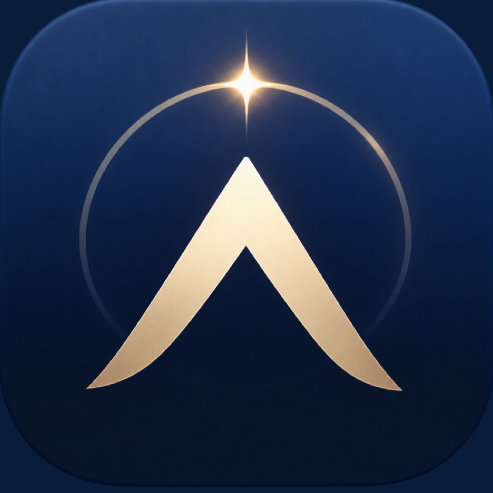

Build your
Cognitive Map
Turn scattered insights into a visual system of ideas, sources, and patterns.
↗
Axendra Try AxendraA personal intellectual development system
Axendra brings together ideas from books, public figures, documents, conversations, and lived experience—then turns them into a living map of how your thinking evolves.
Private by default. Built for lifelong learners.
A clearer relationship
with your own ideas.
Most tools help you collect more. Axendra helps you make meaning from the ideas, people, documents, and experiences that shape you.
Bring in a book, a public figure, a document, or a question that stays with you. See every source become connected, searchable, and useful when life asks you to decide.
Discover the systemTurn scattered insights into a visual system of ideas, sources, and patterns.
↗Use AI to think with your accumulated knowledge—not a generic feed.
↗Trace where an insight came from and how it connects to the rest of you.
↗The goal isn’t to remember more. It’s to become more deliberate about what you think.
— The Axendra principle
Your ideas are already connected.
Axendra is designed for the moments when you want to go beyond collecting sources—and start understanding how they shape you.
Find Axendra on the App StoreUnderstand
Reflect
Evolve